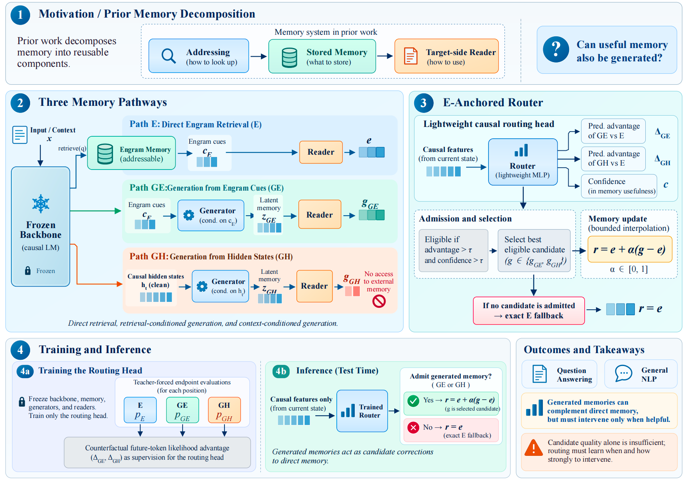

Direct Engram retrieval
The stable reference pathway. Retrieved memory is projected into the target backbone without requiring a generated candidate.
Learned-memory methods store information in an explicit table and consume it through a separate reader, allowing addressing, storage, and reading to be modified independently. Prior work on cross-model memory transfer exploits this separation to reuse learned memory across frozen backbones through an adapted reader, while the representation consumed by the model still originates from stored memory. This raises a natural question: must useful memory always be retrieved from storage, or can it also be generated? We investigate this question with MemoryAthena, a memory interface with three pathways: direct Engram retrieval (E), generation from retrieved Engram cues (GE), and generation from causal backbone states without consulting the memory table (GH). Generated memory is not uniformly better than direct retrieval: it can complement E in one context but interfere with it in another. MemoryAthena therefore treats E as an explicit anchor and learns when a generated representation should intervene. With the backbone, memory, generators, and readers frozen, a lightweight causal routing head is trained from counterfactual future-token likelihood advantages of GE and GH relative to E. At inference time, an admitted candidate modifies the E residual through bounded interpolation, while rejection recovers the direct pathway exactly. On question answering, MemoryAthena raises the five-task average from 37.65 to 39.28 over the direct pathway of the same checkpoint, while the six-task general-NLP average increases from 76.73 to 79.13. The complete memory-side system contains approximately 201M parameters, excluding the frozen backbone. Further analyses show that the utility of E, GE, and GH varies across tasks and inputs, while gold-label oracles reveal additional complementarity among the three pathways. These results support generated memory as a selective correction to direct retrieval rather than a universal replacement, and highlight routing when, which, and how strongly to intervene as the central challenge.

Methods
MemoryATHENA keeps direct Engram retrieval as the reference while adding two generated-memory pathways. The generators construct target-side memory proposals from different causal sources, and the router learns when either proposal should modify the E pathway.
The stable reference pathway. Retrieved memory is projected into the target backbone without requiring a generated candidate.
A generator conditions on retrieved Engram representations to produce a target-side memory proposal.
A generator conditions on clean causal hidden states, providing a complementary proposal that does not directly consult the memory table.
The Engram memory remains frozen and addressable, preserving a shared external artifact across target-side reader experiments.
Direct, Engram-conditioned, and hidden-state-conditioned readers expose complementary memory views to the target backbone.
GE generates memory from retrieved Engram cues, while GH generates memory from clean causal backbone states without consulting the memory table. Both are candidate corrections to E, not unconditional replacements.
The router is trained from future-token likelihood advantages of GE and GH relative to E, not from downstream task labels.
A proposal is admitted only when its predicted advantage and confidence pass the configured rule; otherwise inference returns exactly to the direct E reference.
Research questions
We compare E, GE, GH, alternative routing rules, and cross-backbone transfer to test when generated memory provides a useful correction to direct retrieval rather than a universal replacement.
Ablations separate the contributions of the learned memory interface, its initialization, and the learned routing policy, including architectural controls, from-scratch memory, and a random-router control.
Downstream routing analysis and a label-informed source oracle study how E, GE, and GH contribute, and how much complementary headroom remains beyond the deployed router.
Main results
Headline aggregates from the current paper-facing audit. Values are percentages and use one training seed (42). The tables keep protocol caveats visible instead of collapsing unlike baselines into one claim.
Open-domain QA cells are EM/F1; TruthfulQA cells are MC1/MC2/MC3/mean.
| Setting | NQ | WebQA | TriviaQA | TruthfulQA | HotpotQA |
|---|---|---|---|---|---|
| Engram-only | 20.28/28.18 | 14.86/33.28 | 63.92/69.18 | 27.42/44.32/22.69/31.47 | 17.95/25.92 |
| E-only path | 20.20/28.28 | 14.96/33.35 | 64.05/69.34 | 26.93/44.18/22.64/31.25 | 18.19/26.04 |
| Three-source router | 22.72/33.02 | 17.86/34.60 | 62.78/70.68 | 28.15/44.04/23.02/31.74 | 15.62/26.34 |
| Mistral → Llama transfer | 20.37/29.98 | 18.06/36.40 | 60.35/67.39 | 27.78/41.57/21.87/30.41 | 16.00/25.17 |
The standalone Engram-only row and joint-checkpoint rows have different training histories; the transfer row is reported separately.
Accuracy (%). E/router rows use the next-token synonym-sum dCPMI protocol; the historical Vanilla row uses a different full-choice scorer.
| Method | SST2 | MR | CR | RT | AGN | Yahoo | Average |
|---|---|---|---|---|---|---|---|
| Vanilla Mistral · historical scorer | 81.08 | 75.60 | 74.00 | 74.67 | 73.24 | 55.03 | 72.27 |
| Engram-only | 84.17 | 81.00 | 82.40 | 82.36 | 72.93 | 57.51 | 76.73 |
| Three-source router · Yahoo τ=1.0 | 88.07 | 84.70 | 84.10 | 83.86 | 76.64 | 57.43 | 79.13 |
Yahoo τ=1.0 is a test-set threshold sweep; the selected threshold is shown explicitly for transparency.
Key findings
GE and GH can complement direct retrieval, but neither uniformly dominates E. The router keeps the strong path available on inputs where generation would interfere.
A frozen memory becomes useful on a new backbone through a target-side reader aligned to that backbone, rather than through the table alone.
The gains come from bounded intervention around a strong direct-memory reference, with exact fallback when generated proposals are not sufficiently useful.
Resources
The public release separates code, model artifacts, and compact experiment metadata. Large scratch paths and raw task data are intentionally not part of the web page.
Access implementation, configs, tests, paper-facing evidence, and the project page source.
Open the official arXiv entry for the MemoryAthena paper and its latest public version.
Explore the released QA and six-task general-NLP model artifacts.
Inspect compact metadata and the aggregate experiment result ledger.
@misc{li2026memoryathenaadaptiveroutinglatent,
title = {MemoryAthena: Adaptive Routing over Latent and Generated Memories},
author = {Mingyuan Li and Guangsheng Yu and Juyuan Zhang and Xu Wang and Zhibo Man and Haonan Zhang and Shaoxiong Ji},
year = {2026},
eprint = {2609.25853},
archivePrefix = {arXiv},
primaryClass = {cs.CL},
url = {https://arxiv.org/abs/2609.25853}
}